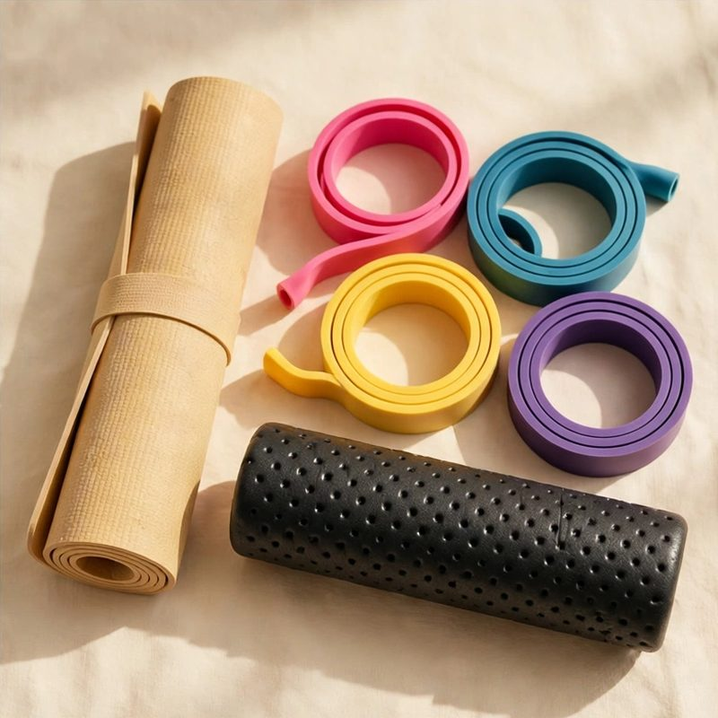
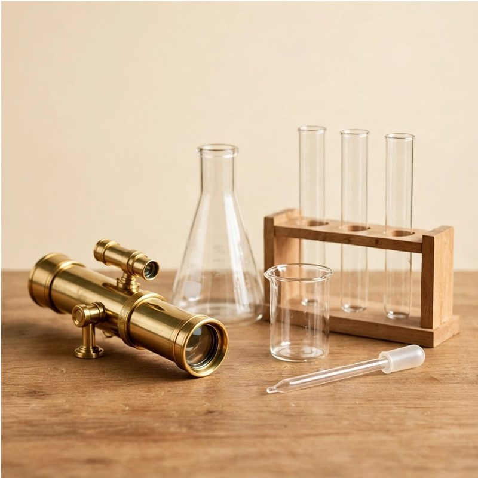
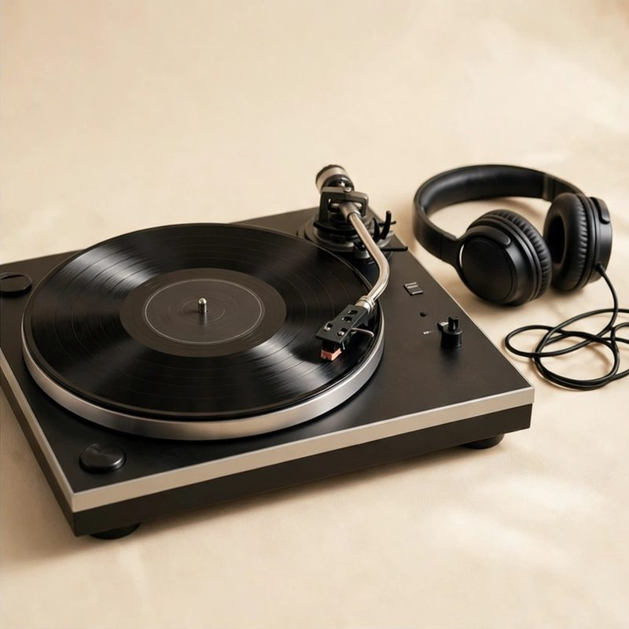
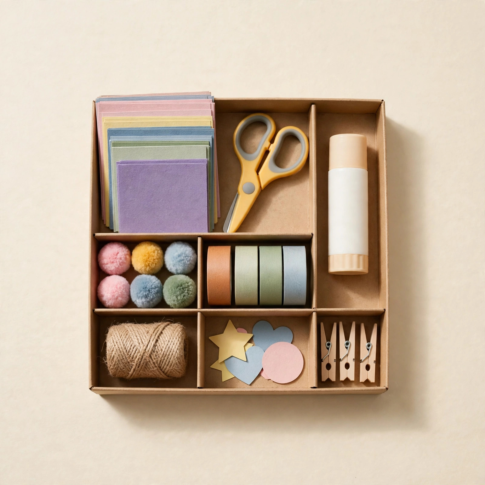
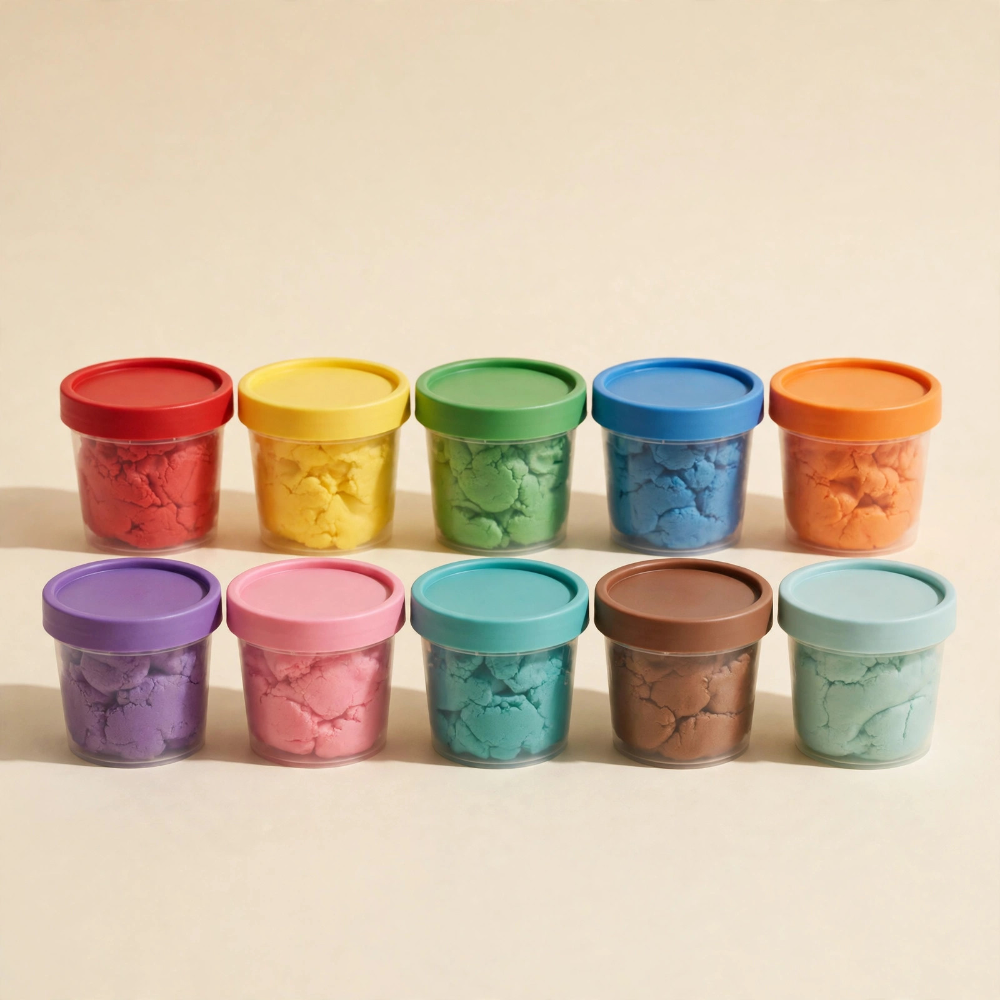
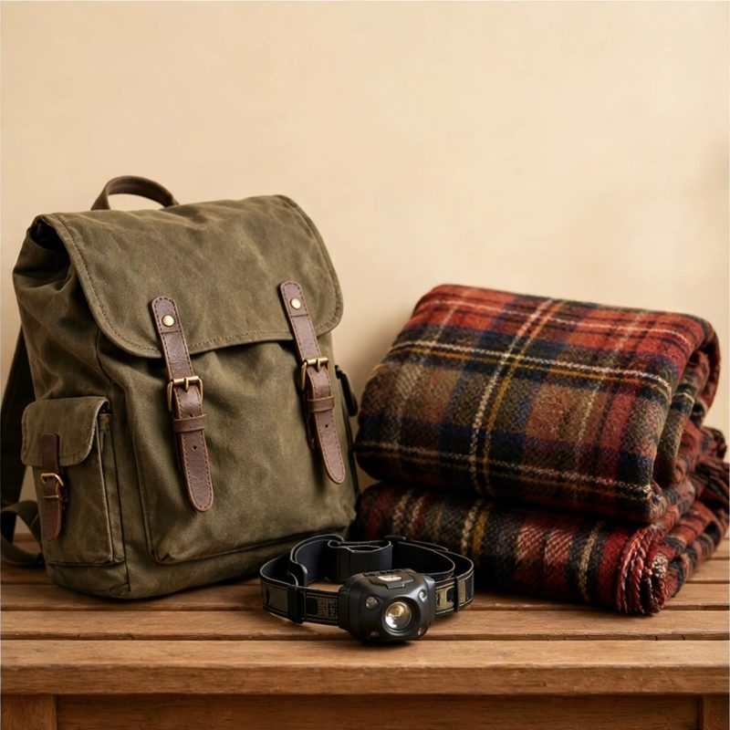

Stocking Stuffers Under $25
Small is the whole point. Good is the hard part.
A stocking stuffer has one job: a real smile in a small package. Every pick below is under $25 and small enough for a stocking. Grown-ups first, then kids.
These are the picker's real top picks for these asks: a friend, fun, under $25, then a kid, fun, under $25, from 233 checked ideas.
Find their gift
Free forever. No ads. No accounts. Or ask in your own words and get picks from the same bank.
For grown-ups

Small-batch hot sauce trio
Three bottles with the heat levels labeled and tasting notes on the box.
Why this fitsA low-stakes way to discover a new favorite.
Buying notesLook for: three heat levels, mild to hot, with real peppers named. Avoid: sets that are all extreme heat.
Care and pairingPairs with a taco night or a grilled cheese bar. Keep the hottest bottle for the brave.
Instant-read digital meat thermometer
Reads in two seconds. No more guessing at the grill.
Why this fitsFor the griller who insists they can tell by touch.
Buying notesLook for: a read in two to three seconds and a thin folding probe. Avoid: slow dial thermometers.
Care and pairingPairs with a grill tool set. Keep a spare battery in the drawer so it never dies mid-cook.

Weighted jump rope
Ten minutes that humbles every cardio machine.
Why this fitsThe smallest serious workout you can own.
Buying notesLook for: adjustable length and handles that spin smooth. Avoid: ropes that kink and tangle.
Care and pairingPairs with a mat to save the rope and the floor. Short sets count; one song is a fine start.

Harmonica with beginner songbook
Fits in a pocket and learnable in an afternoon.
Why this fitsFor the secretly musical.
Buying notesLook for: key of C, ten holes, and a simple songbook. Avoid: toy harmonicas that leak air.
Care and pairingPairs with ten minutes of practice after dinner. A small pouch keeps it in a pocket, where it gets played.

Premium playing cards, two decks
Plastic-coated and endlessly riffleable.
Why this fitsUpgrades every card night they host.
Buying notesLook for: plastic-coated or full plastic decks, poker size. Avoid: paper decks that warp after one night.
Care and pairingPairs with a small notebook for keeping score across years of games.

Star wheel and night sky pocket guide
A rotating chart plus a slim guide to constellations and planets.
Why this fitsClear evenings turn into small lessons anyone can lead from the porch.
Buying notesLook for: a chart set for your latitude and print that reads under a porch light. Avoid: glow toys sold as astronomy tools.
Care and pairingPairs with a red penlight for reading the chart outside. Start with the brightest planet on the first clear night.

Youth orchestra concert ticket
One ticket to hear a local youth orchestra perform live.
Why this fitsYoung players trying hard on stage make pride easy to feel.
Buying notesLook for: a program under ninety minutes and seats near the front. Avoid: standing room only halls.
Care and pairingRead the program together before it starts. Pairs with ice cream after.

Kalimba thumb piano with song cards
An eight key metal thumb piano that fits in small hands.
Why this fitsSmall thumbs can play a tune on day one, no lessons needed.
Buying notesLook for: clear number marks on the keys and a soft carry pouch. Avoid: stiff keys that hurt thumbs.
Care and pairingLearn one song first and teach it. Pairs with a quiet corner and ten spare minutes.
For kids

Art and craft kit
Paints, brushes, canvases, and washable everything.
Why this fitsFor the maker.
Buying notesLook for: washable paints, thick paper, and brushes that rinse clean. Avoid: kits heavy on glitter.
Care and pairingPairs with an apron and a cheap table cover, so the mess never stops the project.

Three picture books
New favorites, picked for their age.
Why this fitsFor the bedtime routine.
Buying notesLook for: new favorites for their age, with art worth a second look. Avoid: books they already own.
Care and pairingPairs with reading one together the same night. A note inside the cover makes it a keeper.
Washable marker and coloring book set
Forty markers and two thick coloring books.
Why this fitsFor quiet afternoons.
Buying notesLook for: truly washable markers and thick coloring pages. Avoid: markers that stain clothes and hands.
Care and pairingPairs with a lap desk for car rides. The washable part saves clothes, couches, and car seats.

Modeling dough 10-pack
Every color, plus cutters and rollers.
Why this fitsFor hands that cannot sit still.
Buying notesLook for: soft dough in ten colors, with cutters and rollers. Avoid: dough that dries out in a week.
Care and pairingCare: seal each tub tight or the dough dries in a week. Pairs with cookie cutters from the kitchen.
No-cook snack making kit for kids
Safe tools, picture recipes, and snacks they plate themselves.
Why this fitsPride tastes better when small hands made it.
Buying notesLook for: picture recipes, safe tools, and pieces that wash easy. Avoid: kits that need a hot stove.
Care and pairingPairs with a kid-safe knife for soft fruit. Best on a slow weekend morning with music on.
Pocket science kit with magnifier and bug viewer
Magnifier, bug viewer, and field cards for backyard finds.
Why this fitsEvery walk outside becomes a small expedition.
Buying notesLook for: a real glass magnifier and a viewer with air holes. Avoid: flimsy plastic lenses that scratch.
Care and pairingPairs with a small notebook for field notes. Bugs get released the same day, every time.

Nature scavenger hunt kit for kids
Picture cards, a magnifier, and a pouch for found treasures.
Why this fitsTurning a plain walk into a hunt keeps small legs moving.
Buying notesLook for: cards with pictures, not just words, and a pouch that belts on. Avoid: kits that need an app to play.
Care and pairingPairs with a pencil for checking off finds. The last card is always a snack spot back home.
Animal movement card deck for kids
Fifty cards that turn wiggles into bear crawls and frog jumps.
Why this fitsSilly prompts burn energy on rainy afternoons without any screens.
Buying notesLook for: big pictures, moves safe on carpet, and rounds under ten minutes. Avoid: decks that need open floor space like a gym.
Care and pairingPairs with music on low while they move. Let the youngest kid deal the cards each round.
Find their gift
Tell the picker who they are and what they are into. Get five picks that fit your budget.
More December questions
Stocking Stuffers Under $25 · Gifts for a Coworker You Barely Know · Gifts for People Who Are Hard to Buy For
Common questions
What makes a good stocking stuffer?
Small, a little surprising, and still useful after the morning ends. The harmonica and the kalimba both fit a stocking and teach a first song the same day. Plain filler candy is gone by lunch and forgotten by New Year.
How much should a stocking stuffer cost?
Under $25 covers nearly every good one, and most picks here sit well under it. A stocking is five or six small joys, not one big gift cut down to size.
Do you link to stores or sell these gifts?
No. Every idea is described in plain words, with no store links. Search the name anywhere you like to buy it. The site sells nothing, so it has exactly one job: good ideas.